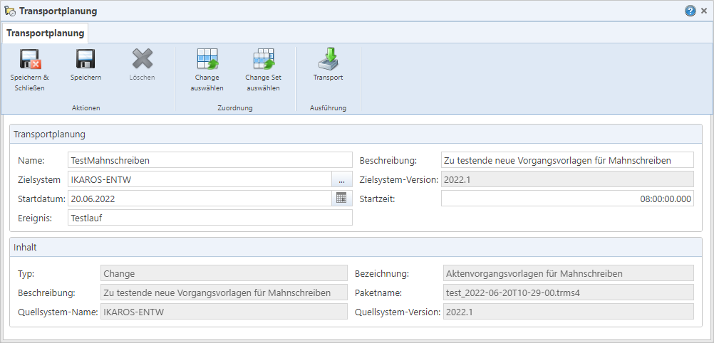

Der Bearbeitungsdialog für Transportaufträge

Abb. 32: Dialog für einen Transportauftrag
Rahmen „Transportplanung“
•Textfeld „Name“: Der maximal 50 Zeichen lange, eindeutige Name für den Transportauftrag.
•Textfeld „Beschreibung“: Eine Beschreibung zu dem Transportauftrag. Sie wird unter anderem in der Übersicht der Transportprotokolle angezeigt.
•Auswahlfeld „Zielsystem“: Das IKAROS-System, in das der Change bzw. das Change Set übertragen und installiert werden soll.
•Datumsfeld „Startdatum“[*]: Das Datum hat derzeit keine technische Auswirkung, sondern kann zur manuellen Organisation von Transporten herangezogen werden.
•Zeitfeld „Startzeit“[*]: Die Uhrzeit hat derzeit keine technische Auswirkung, sondern kann zur manuellen Organisation von Transporten herangezogen werden.
•Textfeld „Ereignis“[*]: Das „Ereignis“ hat derzeit keine technische Auswirkung, sondern kann zur manuellen Organisation von Transporten herangezogen werden.
[*] Hinweis: Für das TRMS ist eine Anbindung an Scheduler-Anwendungen geplant, welche dann das Startdatum, die Startzeit sowie den „Ereignis“-Ausdruck für die automatisierte Ausführung auslesen könnten.
Rahmen „Inhalt“
•Textfeld „Typ“: Zeigt an, welche Art von Artefaktpaket mit dem Auftrag transportiert werden soll. Möglich sind „Change“ und „Change Set“. Das TRMS trägt den Wert automatisch ein, sobald dem Auftrag der gewünschte Change bzw. das gewünschte Change Set zugewiesen wurde.
•Textfeld „Bezeichnung“: Enthält die Bezeichnung des gewählten Changes/Change Sets. Wird vom TRMS automatisch eingetragen.
•Textfeld „Beschreibung“: Die Beschreibung des gewählten Changes/Change Sets. Wird vom TRMS automatisch eingetragen.
•Textfeld „Paketname“: Der Name des „.trms4“-Pakets zum gewählten Change/des Change Sets, falls eines bereits generiert (und somit in der TRMS-Datenbank gespeichert) wurde; wird vom TRMS automatisch eingetragen. Um ein Paket vorab zu erstellen, müssen Sie die Schaltfläche „Erstellen“ in den Menüpunkten „Changes“ [Link] oder „Change Sets“ [Link] bzw. im Dialog des erweiterten Artefaktpaket-Assistenten nutzen [Link].
Hinweis: Falls das Paket zum Zeitpunkt des Transportvorgangs noch nicht in der Datenbank gespeichert vorliegt, wird es vom TRMS automatisch erzeugt. Dies erfordert zum einen Zugriff auf das Quellsystem und kann den Transportprozess zum anderen verlängern.
•Textfeld „Quellsystem-Name“: Der Name des Systems, aus dem die Artefakte im gewählten Change/Change Set stammen. Wird vom TRMS aus dem Change/Change Set übernommen.
•Textfeld „Quellsystem-Version“: Die IKAROS-Version des Quellsystems, wie sie im Change/Change Set steht.
Schaltflächen
Symbol
|
Schaltfläche
|
Beschreibung
|
|
|
„Speichern & Schließen“
[Strg] + [H]
|
Speichert die Änderungen am Transportauftrag und schließt den Dialog.
|

|
„Speichern“
[Strg] + [S]
|
Speichert die Änderungen am Transportauftrag.
|

|
„Löschen“
[Strg] + [D]
|
Löscht den Transportauftrag nach der Bestätigung einer Sicherheitsabfrage dauerhaft aus der Datenbank des TRMS.
|

|
„Change auswählen“
[Strg] + [L]
|
Öffnet eine Liste mit Changes, um dem Transportauftrag einen davon zuzuweisen.
Einem Transportauftrag muss immer genau entweder ein Change oder ein Change Set zugewiesen sein.
|

|
„Change Set auswählen“
[Strg] + [Umschalt] + [L]
|
Öffnet eine Liste mit Change Sets, um dem Transportauftrag einen davon zuzuweisen.
Einem Transportauftrag muss immer genau entweder ein Change oder ein Change Set zugewiesen sein.
|

|
„Transport“
[Strg] + [i]
|
Öffnet einen Dialog zur Anmeldung am Zielsystem und startet den Transportprozess für den markierten Transportauftrag.
Das Protokoll dazu können Sie im Menüpunkt „Transportprotokolle“ öffnen.
|